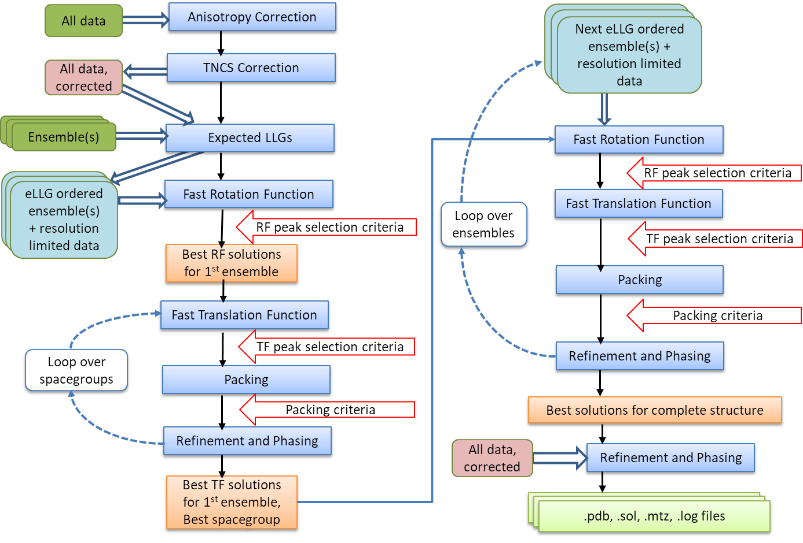
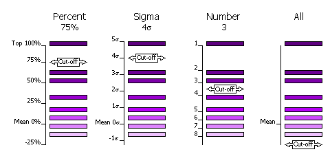
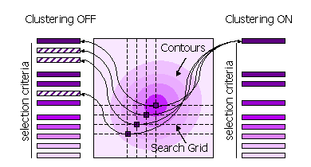

Quicklink to example scripts -> MR using keyword input
Quicklink to phaser.famos (find_alt_orig_sym_mate) documentation -> Famos
Phaser should be able to solve most structures with the Automated Molecular Replacement mode, and this is the first mode that you should try. Give Phaser your data (How to Define Data) and your models (How to Define Models), tell Phaser what to search for, and a list of possible spacegroups (in the same point group).
If this doesn't work (see Has Phaser Solved It?), you can try selecting peaks of lower significance in the rotation function in case the real orientation was not within the selection criteria. By default peaks above 75% of the top peak are selected (see How to Select Peaks). See What to do in Difficult Cases for more hints and tips. If the automated molecular replacement mode doesn't work even with non-default input you need to run the modes of Phaser separately. The possibilities are endless - you can even try exhaustive searches (translations of all orientations) if you want - but experience has shown that most structures that can be solved by Phaser can be solved by relatively simple strategies.
Automated Molecular Replacement combines the anisotropy correction, likelihood enhanced fast rotation function, likelihood enhanced fast translation function, packing and refinement modes for multiple search models and a set of possible spacegroups to automatically solve a structure by molecular replacement. Top solutions are output to the files FILEROOT.sol, FILEROOT.#.mtz and FILEROOT.#.pdb (where "#" refers to the sorted solution number, 1 being the best, and only 1 is output by default). Many structures can be solved by running an automated molecular replacement search with defaults, giving the ensembles that you expect to be easiest to find first.
At the completion of Molecular Replacement you may wish to place your solutions on a common origin with a previous solution, for which Famos can be used.

Flow Diagram for Automated MR
The difficulty of a molecular replacement problem depends primarily on two major factors: how well the model will be able to explain the diffraction data (which depends both on the accuracy of the model and on its completeness), and how many reflections can be explained, at least in part. Each reflection provides a piece of information that helps to identify correct MR solutions.
It is possible to make a reasonable prediction of whether or not a solution will be found. If the quality of the model (its accuracy and completeness) can be estimated, then the expected contribution of each reflection to the total LLG can also be estimated. From a large battery of tests, we know that an LLG of 60 or greater usually indicates a correct solution (at least in the absence of complicating factors such as translational non-crystallographic symmetry, tNCS). Building on this understanding, if it is estimated that the LLG will be 60 or less, then Phaser will assume that the problem is a difficult one, and will implement search procedures optimised for difficult problems.
The signal for a molecular replacement solution should be very clear if the expected value of the LLG is much higher than the minimum required to be fairly certain of a solution. Currently Phaser aims for a minimum LLG of 120 and, if it is possible to achieve an even higher value, given the quality of the model and the quantity of diffraction data, then the resolution for the initial search is limited to the value required to achieve an expected LLG of 120. Data to the full resolution are still used for a final rigid-body refinement, or in a second pass if a clear solution is not found in the first attempt.
However, if the model is expected to have a large RMS error (based usually on the correlation between sequence identity and RMS error), then data to high resolution will not contribute any significant signal. Regardless of the expected LLG at the highest resolution limit, the resolution used is limited to 1.8 times the estimated RMS error of the model, because this resolution limit gives about 99% of the LLG that could be achieved.
Because Phaser implements strategies designed to solve structures with as much confidence as possible, as efficiently as possible, it is best to leave the choice of resolution to Phaser, at least in the first instance.
| TF Z-score | Have I solved it? |
|---|---|
| less than 5 | no |
| 5 - 6 | unlikely |
| 6 - 7 | possibly |
| 7 - 8 | probably |
| more than 8* | definitely |
| *6 for 1st model in monoclinic space groups | |
Ideally, a unique solution with a strong signal will be found at the end of the search. If you are searching for multiple components, then ideally the search for each component will also give a strong signal. However if the signal-to-noise of your search is low, there will be noise peaks and multiple ambiguous solutions. Signal-to-noise is judged using the Z-score, which is computed by comparing the LLG values from the rotation or translation search with LLG values for a set of random rotations or translations. The mean and the RMS deviation from the mean are computed from the random set, then the Z-score for a search peak is defined as its LLG minus the mean, all divided by the RMS deviation, ''i.e. '' '''the number of standard deviations above (or below) the mean. '''
For a rotation function, the correct orientation may be well down the list with a Z-score (number of standard deviations above the mean value, or RFZ) under 4, and it is often not possible to identify the correct orientation until a translation function is performed and yields a clear solution. Note that the signal-to-noise of the rotation function drops with increasing number of primitive symmetry operations (the number of different orientations for symmetry-related molecules), because there is more uncertainty about how the structure factor contributions from symmetry-related copies will add up.
For a translation function the correct solution will generally have a Z-score (TFZ) over 5 and be well separated from the rest of the solutions. Of course, there will always be exceptions! The table gives a very rough guide to interpreting TFZ scores. This table will be updated, as we learn more from systematic molecular replacement trials.
When you are searching for multiple components, the signal may be low for the first few components but, as the model becomes more complete, the signal should become stronger. Finding a clear solution for a new component is a good sign that the partial solution to which that component was added was indeed correct.
You should always at least glance through the summary of the logfile. One thing to look for, in particular, is whether any translation solutions with a high Z-score have been rejected by the packing step. By default up to 5 percent of marker atoms (C-alpha atoms for protein) are allowed to be involved in clashes. A solution with more clashes may still be correct, and the clashes may arise only because of differences in small surface loops. If this happens, repeat the run allowing a suitable number of clashes. Note that, unless there is specific evidence in the logfile that a high TFZ-score solution is being rejected with a few clashes, it is much better to edit the model to remove the loops than to increase the number of allowed clashes. Packing criteria are a very powerful constraint on the translation function, and increasing the number of allowed clashes beyond the default will increase the search time enormously without the possibility of generating any correct solutions that would not have otherwise been found.
Note that, by default, Phaser will produce a single PDB file corresponding to the top solution found (if any), so finding a single PDB file in your output directory is not an indication that the search succeeded! You have to look, at least, at the summary of the logfile, or at the list of possible solutions in the .sol file that is produced if you run Phaser from ccp4i or command-line scripts.
A highly compact summary of the history of the statistics of a solution is given in the SOLUTION SET in the .sol file. This is a good place to start your analysis of the output. The annotation gives the Z-score of the solution at each rotation and translation function, the number of clashes in the packing, and the refined LLG.
| Annotation | Meaning |
|---|---|
| RFZ= | Rotation Function Z-score |
| TFZ= | Translation Function Z-score |
| PAK= | Number of packing clashes |
| LLG= | LLG after refinement. Will be repeated when a low resolution refinement is followed by a high resolution refinement. |
| TFZ== | Translation Function Z-score equivalent, only calculated for the top solution after refinement (or for the number of top files specified by TOPFILES) |
| RF++ | Rotation angle from previous strong solution has been used in the addition of next solution |
| RF*0 | Rotation angle 000 identified by low R-factor of input model |
| TFZ=* | First molecule in P1 (arbitrary origin, no Translation Function required) |
| TF*0 | Translation vector 000 identified by low R-factor of input model |
| (... ...) | Set of TFZ PAK and LLG values for placements that were amalgamated (more than one placement from a single Translation Function) |
| LLG+=(... ...) | Set of LLG values calculated during amalgamation, which will always be increasing in value |
| +TNCS | Components added by Translational NCS relation |
| *T=n | Solution matches template solution n |
Two versions of TFZ (the translation function Z-score) now appear for each component. The first ("TFZ=") is the Z-score from the actual translation search, which depends on the accuracy of the orientation used for that search. The second ("TFZ==") is the TFZ-equivalent, which indicates what the TFZ score would have been with the correct (refined) orientation. You should see the TFZ-equivalent is high at least for the final components of the solution, and that the LLG (log-likelihood gain) increases as each component of the solution is added. For example, in the case of beta-blip the annotation for the single solution output in the .sol file shows these features
Note that the Euler angles in Phaser follow the same convention as those defined for the Crowther fast rotation function, i.e. z-y-z (rotate around the z-axis, followed by the new y-axis, followed by the new z-axis).
A highly compact summary of the history of the peak positions of a solution is given in the SOLUTION HISTORY in the .sol file. Together with the SOLUTION SET annotation, this is useful in your analysis of the output.
| History | Meaning |
|---|---|
| RF/TF(r/t:n) | (r) Rotation Function peak number/(t) Translation Function peak number for the rotation function : (n) number of peak in final merged and sorted list |
| PAK(n:m) | (n) input solution number : (m) output solution number after packing condition applied |
| RNP(m,a,b,c,... : p) | All input peaks amalgamated after refinement to give output solution number (m and others): (p) output solution number |
| FUSE(A,B,C) | Solution numbers merged in amalgamation |
For example, in the case of beta-blip the annotation for the single solution output in the .sol file shows these features
A more complicated structure solution may have
SOLU HISTORY RF/TF(7/1:10)PAK(10:10)RNP(10,12,13,11,17,16,18,25,3,8,22,21,20,7,969,6,5,201,9,4,390,2,1,19:1)RNP(1:1)
Not every structure can be solved by molecular replacement, but the right strategy can push the limits. What to do when the default jobs fail depends on why your structure is difficult.
Flexible Structure
The relative orientations of the domains may be different in your crystal than in the model. If that may be the case, break the model into separate PDB files containing rigid-body units, enter these as separate ensembles, and search for them separately. If you find a convincing solution for one domain, but fail to find a solution for the next domain, you can take advantage of the knowledge that its orientation is likely to be similar to that of the first domain. The ROTAte AROUnd option of the brute rotation search can be used to restrict the search to orientations within, say, 30 degrees of that of the known domain. Allow for close approach of the domains by increasing the allowed clashes with the PACK keyword by, say, 1 for each domain break that you introduce. Note that it is possible to use the brute rotation search as part of the automated molecular replacement pipeline, by changing the choice of the type of rotation search. Alternatively, you could try generating a series of models perturbed by normal modes, with the NMAPdb keyword. One of these may duplicate the hinge motion and provide a good single model.
Poor or Incomplete Model
Signal-to-noise is reduced by coordinate errors or incompleteness of the model. Since the rotation search has lower signal to begin with than the translation search, it is usually more severely affected. For this reason, it can be very useful to use the subsequent translation search as a way to choose among many (say 1000) orientations. THe MR_AUTO FAST search mode automatically reduces the cutoff for accepting peaks from the fast rotation function if the decault pass does not find a solution with a high z-score, but you can manually reduce this further with the PEAKS and PURGE keywords. You can also try turning off the clustering of fast rotation function peaks because the correct orientation may sit on the shoulder of a peak in the rotation function. As shown convincingly by Schwarzenbacher et al. (Schwarzenbacher, Godzik, Grzechnik and Jaroszewski, Acta Cryst. D60, 1229-1236, 2004), judicious editing can make a significant difference in the quality of a distant model. In a number of tests with their data on models below 30% sequence identity, we have found that Phaser works best with a "mixed model" (non-identical sidechains longer than Ser replaced by Ser). In agreement with their results, the best models are generally derived using more sophisticated alignment protocols, such as their FFAS protocol. Use phenix.sculptor to edit your model.
High Degree of Non-crystallographic Symmetry
If there are clear peaks in the self-rotation function, you can expect orientations to be related by this known NCS. Methods to automatically use such information will be implemented in a future version of Phaser. In the meantime, you can work out for yourself the orientations that would be consistent with NCS and use the ROTAte AROUnd option to sample similar orientations. Alternatively, you may have an oligomeric model and expect similar NCS in the crystal. First search with the oligomeric model; if this fails, search with a monomer. If that succeeds, you can again use the ROTAte AROUnd option to force a subsequent monomer to adopt an orientation similar to the one you expect.
What not to do
The automated mode of Phaser is fast when Phaser finds a high Z-score solution to your problem. When Phaser cannot find a solution with a significant Z-score, it "thrashes", meaning it maintains a list of 100-1000's of low Z-score potential solutions and tries to improve them. This can lead to exceptionally long Phaser runs (over a week of CPU time). Such runs are possible because the highly automated script allows many consecutive MR jobs to be run without you having to manually set 100-1000's of jobs running and keep track of the results. "Thrashing" generally does not produce a solution: solutions generally appear relatively quickly or not at all. It is more useful to go back and analyse your models and your data to see where improvements can be made. Your system manager will appreciate you terminating these jobs. It is also not a good idea to effectively remove the packing test. Unless there is specific evidence in the logfile that a high TF-function Z-score solution is being rejected with a few clashes, it is much better to edit the model to remove the loops than to increase the number of allowed clashes. Packing criteria are a very powerful constraint on the translation function, and increasing the number of allowed clashes beyond a few (e.g. 1-5) will increase the search time enormously without the possibility of generating any correct solutions that would not have otherwise been found.
Other suggestions
Phaser has powerful input, output and scripting facilities that allow a large number of possibilities for altering default behaviour and forcing Phaser to do what you think it should. However, you will need to read the information in the manual below to take advantage of these facilities!
You need to tell Phaser the name of the mtz file containing your data and the columns in the mtz file to be used using the HKLIn and LABIn keywords. Additional keywords (BINS CELL OUTLier RESOlution SPACegroup) define how the data are used.
Phaser must be given the models that it will use for molecular replacement. A model in Phaser is referred to as an "ensemble", even when it is described by a single file. This is because it is possible to provide a set of aligned structures as an ensemble, from which a statistically-weighted averaged model is calculated. A molecular replacement model is provided either as one or more aligned pdb files, or as an electron density map, entered as structure factors in an mtz file. Each ensemble is treated as a separate type of rigid body to be placed in the molecular replacement solution. An ensemble should only be defined once, even if there are several copies of the molecule in the asymmetric unit.
Fundamental to the way in which Phaser uses MR models (either from coordinates or maps) is to estimate how the accuracy of the model falls off as a function of resolution, represented by the Sigma(A) curve. To generate the Sigma(A) curve, Phaser needs to know the RMS coordinate error expected for the model and the fraction of the scattering power in the asymmetric unit that this model contributes.
A Babinet-style correction is used to account for the effects of disordered solvent on the completeness of the model at low resolution.
Molecular replacement models are defined with the ENSEmble keyword and the COMPosition keyword. The ENSEmble keyword gives (amongst other things) the RMS deviation for the Sigma(A) curve. The COMPosition keyword is used to deduce the fraction of the scattering power in the asymmetric unit that each ensemble contributes. The composition of the asymmetric unit is defined either by entering the molecular weights or sequences of the components in the asymmetric unit, and giving the number of copies of each. Expert users can also enter the fraction of the scattering of each component directly, although the composition must still be entered for the absolute scale calculation. Please note that the composition supplied to Phaser has to include everything in the asymmetric unit, not just what is being looked for in the current search!
The RMS deviation is determined directly from RMS or indirectly from IDENtity in the ENSEmble keyword using a formula that depends on the sequence identity and the number of residues in the model.
The RMS deviation estimated from ID may be an underestimate of the true value if there is a slight conformational change between the model and target structures. To find a solution in these cases it may be necessary to increase the RMS from the default value generated from the ID, by say 0.5 Angstroms. On the other hand, when Phaser succeeds in solving a structure from a model with sequence identity much below 30%, it is often found that the fold is preserved better than the average for that level of sequence identity. So it may be worth submitting a run in which the RMS error is set at, say, 1.5, even if the sequence identity is low. The table below can be used as a guide as to the default RMS value corresponding to ID.
If you construct a model by homology modelling, remember that the RMS error you expect is essentially the error you expect from the template structure (if not worse!). So specify the sequence identity of the template, not of the homology model.
Only the model with the highest sequence identity is reported in the output pdb file. Also, HETATM cards in the input pdb file are ignored in the calculation of the structure factors for the ensemble, but are carried through to the output pdb file. Thus, the phases on the output mtz file (which come from the structure factors of the ensemble) do not correspond to those that would be calculated from the output pdb file, when there is more than one pdb file in an ensemble and/or the pdbfile(s) have HETATM records.
| Identity | #50 | #100 | #200 | #300 | #400 | #600 | #850 | #1000 | #1500 | #2000 |
|---|---|---|---|---|---|---|---|---|---|---|
| ID=0% | 1.579 | 1.689 | 1.875 | 2.030 | 2.164 | 2.391 | 2.625 | 2.748 | 3.093 | 3.375 |
| ID=10% | 1.356 | 1.451 | 1.610 | 1.743 | 1.858 | 2.053 | 2.255 | 2.360 | 2.657 | 2.899 |
| ID=20% | 1.165 | 1.246 | 1.383 | 1.497 | 1.596 | 1.764 | 1.936 | 2.027 | 2.281 | 2.489 |
| ID=30% | 1.000 | 1.070 | 1.188 | 1.286 | 1.371 | 1.515 | 1.663 | 1.741 | 1.959 | 2.138 |
| ID=40% | 0.859 | 0.919 | 1.020 | 1.104 | 1.177 | 1.301 | 1.428 | 1.495 | 1.683 | 1.836 |
| ID=50% | 0.738 | 0.789 | 0.876 | 0.948 | 1.011 | 1.117 | 1.227 | 1.284 | 1.445 | 1.577 |
| ID=60% | 0.634 | 0.678 | 0.752 | 0.814 | 0.868 | 0.959 | 1.053 | 1.103 | 1.241 | 1.354 |
| ID=70% | 0.544 | 0.582 | 0.646 | 0.699 | 0.746 | 0.824 | 0.905 | 0.947 | 1.066 | 1.163 |
| ID=80% | 0.467 | 0.500 | 0.555 | 0.601 | 0.640 | 0.708 | 0.777 | 0.813 | 0.915 | 0.999 |
| ID=90% | 0.401 | 0.429 | 0.477 | 0.516 | 0.550 | 0.608 | 0.667 | 0.698 | 0.786 | 0.858 |
| ID=100% | 0.345 | 0.369 | 0.409 | 0.443 | 0.472 | 0.522 | 0.573 | 0.600 | 0.675 | 0.737 |
Phaser ignores the scattering from HETATM records. The HETATM records are carried though to output with occupancy set to zero. Ligands will therefore not contribute to the scattering used for molecular replacement. The exceptions to this rule are the HETATM records for MSE (seleno-methionine) MSO (seleno-methionine selenoxide) CSE (seleno-cysteine) CSO (seleno-cysteine selenoxide) ALY (acetyllysine) MLY (n-dimethyl-lysine) and MLZ (n-methyl-lysine) which are used in the scattering and carried through to output with their original occupancy. If you wish to include any HETATM records in the scattering the record name use the keyword ENSE modlid HETATOM ON
Water molecules (identified by the residue name OW WAT HOH H2O OH2 MOH WTR or TIP) are deleted from the pdb file on input, are not used in the scattering and are not carried through to file output. If you want to retain water molecules you will need to change the residue name to something other than this (e.g. WWW) so that the atoms are not identified as water. To include the water molecules in the scattering, the HETATM records will also have to be changed to ATOM records as described above.
When using density as a model, it is necessary to specify both the extent (x,y,z limits) of the cut-out region of density, and the centre of this region. With coordinates, Phaser can work this out by itself. This information is needed, for instance, to decide how large rotational steps can be in the rotation search and to carry out the molecular transform interpolation correctly. In the case of electron density, the RMS value does not have the same physical meaning that it has when the model is specified by atomic coordinates, but it is used to judge how the accuracy of the calculated structure factors drops off with resolution. A suitable value for RMS can be obtained, in the case of density from an experimentally-phased map, by choosing a value that makes the SigmaA curve fall off with resolution similarly to the mean figures-of-merit. In the case of density from an EM image reconstruction, the RMS value should make the SigmaA curve fall off similarly to a Fourier correlation curve used to judge the resolution of the EM image.
For detailed information, including a tutorial with example scripts, see Using density as a model
The composition defines the total amount of protein and nucleic acid that you have in the asymmetric unit not the fraction of the asymmetric unit that you are searching for.
For convenience, the composition defaults to 50% protein scattering by volume (the average for protein crystals). It is better to enter it explicitly, even if only to check that you have correctly deduced the probable content of your crystal. If your crystal has higher or lower solvent content than this, or contains nucleic acid, then the composition should be entered explicitly.
Scattering is determined from the solvent content of the crystal, assuming that the crystal contains protein only, and the average distribution of amino acids in protein. If your crystal contains nucleic acid or your protein has an unusual amino acid distribution then the composition should be entered explicitly using the MW or sequence options.
Scattering is determined from the number of residues in the asymmetric unit, assuming that the crystal contains protein only or nucleic acid only, and assuming an average distribution of residues for either. If your crystal contains a mixture then the composition should be entered explicitly using the MW or sequence options. If your crystal has an unusual residue distribution then the composition should be entered explicitly using the sequence options.
The composition is calculated from the molecular weight of the protein and nucleic acid assuming the protein and nucleic acid have the average distribution of amino acids and bases. If your protein or nucleic acid has an unusual amino acid or base distribution the composition should be entered by sequence. You can mix compositions entered by molecular weight with those entered by sequence.
The composition is calculated from the amino acid sequence of the protein and the base sequence of the nucleic acid in fasta format. You can mix compositions entered by molecular weight with those entered by sequence. Individual atoms can be added to the composition with the COMPOSITION ATOM keyword. This allows the explicit addition of heavy atoms in the structure e.g. Fe atoms.
The fraction scattering of each ensemble can be entered directly. The fraction scattering of each ensemble is normally automatically worked out from the average scattering from each ensemble (calculated from the pdb files if entered as coordinates, or from the protein and nucleic acid molecular weights if entered as a map) divided by the total scattering given by the composition, but entering the fraction scattering directly overrides this calculation. This option is for use when the pdb files of the models in the ensemble are unusual e.g. consist only of C-alpha atoms, or only of hydrogen atoms (as in the CLOUDS method for NMR).
Phaser writes out files ending in ".sol" and ".rlist" that contain the solution information from the job. The root of the files is given by the ROOT keyword. By default, the root filename is PHASER. These files can be read back into subsequent runs of Phaser to build up solutions containing more than one molecule in the asymmetric unit.
"PHASER.sol" files are generated by all modes (rotation function modes with VERBOSE output), and contain the current idea of potential molecular replacement solutions.
"PHASER.rlist" files are generated by the rotation function modes, and are used as input for performing translation functions.
For simple MR cases you don't really need to know how to define molecular replacement solutions. However, for difficult cases you might need to edit the files "PHASER.sol" and "PHASER.rlist" files manually
SOLUtion 6DIM keywords describe Ensembles that have been oriented by a rotation search and positioned by a translation search. Each Ensemble in the asymmetric unit has its own SOLUtion keyword. When more than one (potential) molecular replacement solution is present, the solutions are separated with the SOLUTION SET keywords.
These files define a rotation function list. The peak list is given with a series of SOLUtion TRIAl keywords.
If a partial solution is already known, then the information for the currently "known" parts of the asymmetric unit is given in the form used for the PHASER.sol file, followed by the list of trial orientations for which a translation function is to be performed.
If you have the coordinates of a partial solution with the pdb coordinates of the known structure in the correct orientation and position, then you can force Phaser to use these coordinates. Use the SOLUTION keyword to fix a rotation of 0 0 0 and a position of 0 0 0 for these coordinates.
The selection of peaks saved for output in the rotation and translation functions can be done in four different ways.
Select by Percentage
Percentage of the top peak, where the value of the top peak is defined as 100% and the value of the mean is defined as 0%. Default, cutoff=75%. This criteria has the advantange that at least one peak (the top peak) always survives the selection. If the top solution is clear, then only the one solution will be output, but if the distribution of peaks is rather flat, then many peaks will be output for testing in the next part of the MR procedure (e.g. many peaks selected from the rotation function for testing with a translation function).
Select by Z-score
Number of standard deviations (sigmas) over the mean (the Z-score). Absolute significance test. Not all searches will produce output if the cutoff value is too high (e.g. 5 sigma).
Select by Number
Number of top peaks to select. If the distribution is very flat then it might be better to select a fixed large number (e.g. 1000) of top rotation peaks for testing in the translation function.
No selection
All peaks are selected. Enables full 6 dimensional searches, where all the solutions from the rotation function are output for testing in the translation function. This should never be necessary; it would be much faster and probably just as likely to work if the top 1000 peaks were used in this way.

Selection criteria
Peaks can also be clustered or not clustered prior to selection in steps 1 and 2.
Clustering Off
All high peaks on the search grid are selected
Clustering On
Points on the search grid with higher neighbouring points are removed from the selection

Clustering
The output of Phaser can be controlled with optional keywords.
The ROOT keyword is not compulsory (the default root filename is "PHASER"), but should always be given, so that your jobs have separate and meaningful output filenames.
The TOPFiles keyword controls the number of potential MR solutions for which PDB and (in the appropriate modes) MTZ files are produced.
For the MR_AUTO, MR_RNP and MR_LLG modes, unless HKLOut OFF is given as an optional keyword, Phaser produces an MTZ file with "SigmaA" type weighted Fourier map coefficients for producing electron density maps for rebuilding.
| MTZ Column Labels | Description |
|---|---|
| FWT/PHWT | Amplitude and phase for 2m|Fobs|-D|Fcalc| exp(iαcalc) map |
| DELFWT/PHDELWT | Amplitude and phase for m|Fobs|-D|Fcalc| exp(iαcalc) map |
| FOM | m, analogous to the "Sim" weight, to estimate the reliability of αcalc |
| HLA/HLB/HLC/HLD | Hendrickson-Lattman coefficients encoding the phase probability distribution |
*Warning* Solution by MR in the presence of translational non-crystallographic symmetry is not fully automated.
Phaser calculates correction factors for the expected intensities in the presence of translational non-crystallographic symmetry (tNCS), and is able to solve structures with complex patterns of tNCS. However, the use of Phaser in the presence of tNCS requires the nature of the tNCS to be understood by the user. In simple cases, solution is no more difficult than solution without tNCS, but in complex cases, separate Phaser runs with tNCS turned on and off, and/or the use of different tNCS vectors, may be necessary.
The output of Phaser will help the user in detecting and understanding the tNCS, but the tNCS is not completely characterised by Phaser. The default behaviour may or may not be correct for the particular crystal under study.
Characterization of the tNCS involves understanding the number of copies of the molecule in the asymmetric unit and the translation vectors between them. Molecules related by a tNCS vector will have an associated peak in the native Patterson. Phaser calculates the native Patterson (MODE TNCS) and lists the peaks that are more than 20% of the origin peak. Any given crystal with tNCS may have one or more peaks meeting this criteria.
Documentation for Phaser-2.7.16 and above
No tNCS correction is applied by default if there is
By default, if Phaser detects a peak in the native Patterson then Phaser will search for molecules in pairs related by the tNCS vector given by the peak in the native Patterson.
This will be the correct behaviour if and only if there are an even number of copies of the molecule in the asymmetric unit, clustered into two groups related by a single tNCS vector. There will only be one significant peak in the native Patterson. Fortunately, this is a reasonably common scenario.
Phaser refines the relative orientation of the molecules in the two groups (rotations of up to 10 degrees will still give rise to a significant native Patterson peak) and uses this information to generate expected intensity factors for the reflections. Solution should be straightforward, with the usual caveat for MR that there is a sufficiently good model.
Where there is a single peak in the native Patterson, it is often located at a position half way along a unit cell axis or diagonal, representing a pseudo-halving of the unit cell dimensions. However, Phaser is by no means restricted to these sorts of pseudo-cells in its handling of two-fold tNCS, and the tNCS vector can be in a general position.
Frequently, tNCS does not associate 2 clusters of molecules in the asymmetric unit, but rather there are 3 or more (n) clusters of molecules associated by a series of vectors that are multiples of 1, 2, 3 ... (n-1) times a basic translation vector. Where n times the basic translation vector equates to (very close to) integer multiples of unit cell axes, the tNCS represents a pseudo-cell, and this case is known as commensurate modulation.
Phaser attempts to automatically detect commensurate modulation. The peaks of the native Patterson are analyzed to find the n-fold relationship. The series will not generally have all peaks the same height. Lower peaks in the series represent relationships where the relative rotations between related molecules are larger. Missing peaks in the series may be below the default 20% of origin cut-off. This can be lowered with TNCS PATT PERCENT
Phaser then sets TNCS NMOL and the vector for the tNCS, and searches for ensembles in multiples of NMOL.
When there are more than two molecules related by tNCS, Phaser does not refine the orientations between the molecules related by the tNCS.
However, as for two-fold tNCS, Phaser is not restricted to these sorts of pseudo-cells and the basic tNCS vector can be in a general position, as can the number of copies.
The automatic detection may not give the true tNCS relationship. For example, the true commensurate modulation may be a factor of the NMOL automatically detected by Phaser, or there may not be commensurate modulation at all, or commensurate modulation may not be found with the default Patterson peak height cutoff. In difficult cases, please inspect the Patterson for peaks.
If there are many molecules in the asymmetric unit but they are not all related by tNCS, or there are sub-groups of molecules related by different tNCS vectors, then the modulations of the expected intensities due to the tNCS will be much less significant than the cases described above. In these cases it is possible that structure solution will be achieved without any tNCS correction factors being applied. Indeed, searching for all the copies as tNCS-related multiples when some molecules are not related by tNCS will cause structure solution to fail. To turn off the automatic detection and use of tNCS use the keyword TNCS USE OFF.
If turning off the TNCS correction factors fails to give a solution, then a good approach is to proceed step-wise. Consider the highest native Patterson peak first and determine that nature of the tNCS associated with it. Use the appropriate correction factors to locate all the molecules with this tNCS. Then take the second independent native Patterson peak and apply the correction factors associated with it to find the second set of molecules, fixing the first, etc. Finally, turn TNCS off to find any orphan molecules.